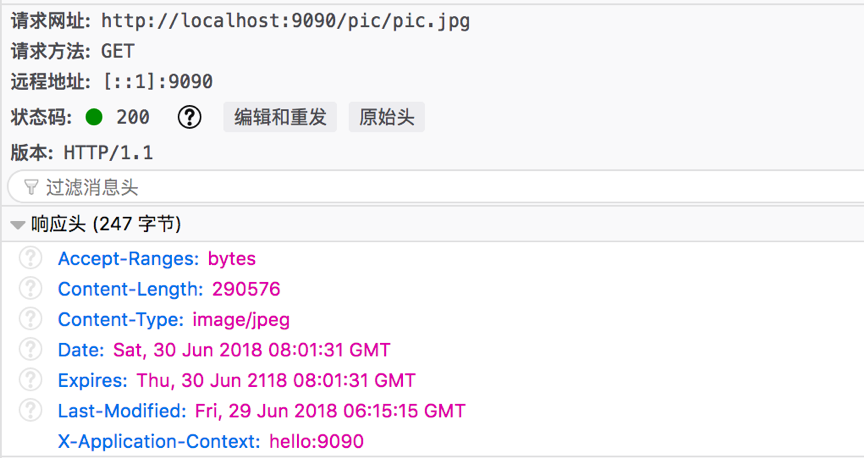
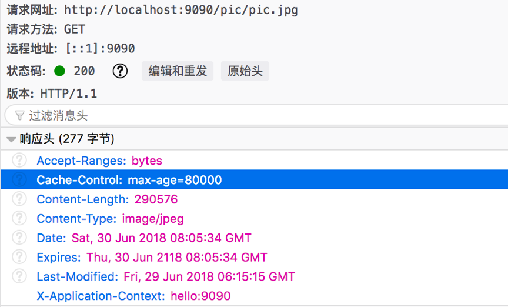
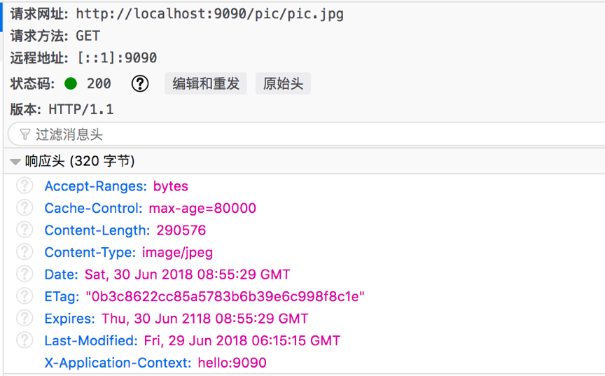

http客户端缓存机制与Spring boot下的服务器配置
本文主要对HTTP的缓存控制的相关的头的功能进行了说明，还对spring-boot的配置进行简短的介绍。
为什么需要浏览器客户端缓存
通过浏览器访问远程服务的资源时，通常浏览器会与远程服务器进行多次交互，比如获取图片、js、css文件等，并且，获取这些文件请求往往都是幂等的，重复的进行这些连接或造成整体资源访问的延时，拖延了浏览器可以使用和处理内容的时间，同时也增加了访问者的数据成本。因此，如果把这些不太频繁变化的文件缓存起来，提供给后面相同的链接使用，就可以有效减少访问延迟与网络带宽消耗；可以让资源的访问具有更高的响应性；就是上，我们称这种缓存为浏览器缓存，或者HTTP缓存，其原理就是：当我们浏览网站的时候，在本地机器存储网站的副本，下次访问同个网址的时候可以不再连接服务器，直接使用本地的缓存。服务器端程序可以通过 HTTP协议的 Cache相关的Header来控制本地的缓存行为，减轻服务器的负担。
与缓存相关的主要的header
这个几个header总结了一个表格如下：
| header | req/res | 说明 |
|---|---|---|
| Expires | response | 指明资源的过期日期 |
| Cache-Control | request/response | 缓存控制字段 |
| Pragma | request/response | 是否缓存 |
| ETag | request/response | 资源的版本的标识符 |
| If-Match | request | 与ETag配合使用，匹配Etag值 |
| If-None-Match | reqeust | 与ETag配合使用，配置Etag值 |
| If-Modified-Since | request | 与Last-Modified配合使用 |
| Last-Modified | response | 请求资源的最近的修改时间 |
| If-Unmodified-Since | request | 与Last-Modified配合使用 |
header的详细解释与实践
Pragma头
在HTTP1.0中规定的通用首部，用来兼容只支持HTTP/1.0的服务器；它的值是空或者no-cache，空时代表可以缓存，no-cache时代表可以缓存，与Cache-Control:no-cache等价，但是当2个header同时出现时，pragma具有更高的优先级。
Expires头
包含过期时间，只会出现在response中，value=0的时候就是已过期，是兼容HTTP/1.0设置。
Cache-Control
在request与response中都会出现，在request中的主要字段含义如下表：
| 字段 | 说明 |
|---|---|
| max-age=<seconds> | 告知服务器客户端希望接收不大于seconds的资源 |
| max-stale[=<seconds>] | 客户端可以获取已经过期的资源。 只要资源不超过指定的过时时间 |
| min-fresh=<seconds> | 表示客户端在指定的时间内需要获取最新的响应 |
| no-cache | 请求都提交给原始服务器进行验证 |
| no-store | 缓存不应存储有关客户端请求或服务器响应的任何内容，包括浏览器的缓存文件夹也不能存储 |
| no-transform | 不得对资源进行转换或转变，比如代理服务器的压缩等操作 |
| only-if-cached | 客户端去缓存中取资源，不要向原始服务器检查是否有更新的拷贝 |
在response中的字段如下表：
| 字段 | 说明 |
|---|---|
| max-age=<seconds> | 资源的过期时间，这个是相对于请求发出的时间，与expires存在不同，改进了expires的缺点 |
| max-stale[=<seconds>] | 客户端可以获取已经过期的资源。 只要资源不超过指定的过时时间 |
| no-cache | 资源不缓存，后续相同的请求都提交给原始服务器获取 |
| no-store | 资源不会被缓存，包括浏览器的缓存文件夹也不能存储 |
| no-transform | 不得对资源进行转换或转变，比如代理服务器的压缩等操作 |
| must-revalidate | 指定客户端在使用缓存前必须校验缓存的状态，并且不能使用过期的资源 |
| public | 资源可以被任何节点缓存，包括不同的用户 |
| private | 资源只能被单个用户缓存，不能作为共享缓存，就是代理服务器不能缓存，浏览器缓存是私有缓存，代理服务器缓存是共享缓存，有这2个分类 |
| proxy-revalidate | 是指共享缓存在使用时必须要验证 |
| s-maxage=<seconds> | 共享缓存中的过期时限设置 |
上面的一些字段可以组合使用，必须要注意的是，目前HTTP缓存只针对GET请求有效，其他请求方法不能缓存。
Last-Modified、If-Modified-Since、If-UnModified-Since头
这几个头都与缓存更新有关系，是一个响应首部，其中包含源头服务器认定的资源做出修改的日期及时间。 它通常被用作一个验证器来判断接收到的或者存储的资源是否彼此一致。由于精确度比 ETag 要低，所以这是一个备用机制。 If-Modified-Since 或 If-Unmodified-Since 首部的条件请求会使用这个字段。
- If-Modified-Since是一个条件首部，使用的值是资源响应中的Last-Modified，请求发出时，会到服务器去确认是否更新，服务器确认最后更新时间一致，返回一个304状态码，此时请求就可以做直接使用缓存中的资源，假如时间不一致，则代表了服务器资源可能进行了更新，此时服务器返回最新的资源并返回200状态码； If-Modified-Since 只可以用在 GET 或 HEAD 请求中，并且它的优先级低于If-None-Match，因为If-None-Match的确认机制更为精确。
- If-Unmodified-Since，这个头与If-Modified-Since的使用方式是类似的，但是处理机制却不同，如果最后的修改时间没匹配上，则返回412；匹配上直接返回资源并200响应码。
ETag、If-Match 、If-None-Match
Etag头是为改进Last-Modified缓存控制方式的不足提出来的，主要的不不足有2个方面：
- 修改改了资源，但是没改变内容，Last-Modified时间改变，此时会完整返回响应；
- Last-Modified相关的首部缓存控制只能用于GET/HEAD方法，在其他的HTTP方法中失效
- 并发更新的内容，向服务器POST时，此时Last-Modified检测失效，后面的更新会覆盖前面的更新，称为“空中碰撞”。
ETag可以提供资源的指纹，并且能够避免“空中碰撞”，具有更改的优先级；现在看下3个头的含义：
- ETag是资源的特定版本的标识符，检测内容是否发生了变化，如果内容发生了变化，要生成新的Etag值。有时候生成的ETag值开头又一个“W/”字符，代表的是要使用弱验证器；
- If-Match是与ETag配合使用，当请求方法为 GET 和 HEAD 的情况下，当版本匹配时服务器返回请求的资源，否则返回412。而对于 PUT、POST 或其他非安全方法来说，只有在满足条件的情况下才可以将资源上传。ETag 之间的比较使用的是强比较算法，即只有在每一个比特都相同的情况下，才可以认为两个文件是相同的。在 ETag 前面添加W/ 前缀表示可以采用相对宽松的算法；
- If-None-Match 当请求的方式是GET 和 HEAD 时，服务器上没有任何资源的 ETag 属性值与这个首部中列出的相匹配的时候，服务器端会才返回所请求的资源，响应码为 200 ，否则返回304，也就是可以直接使用缓存；对于其他方法来说，当且仅当最终确认没有已存在的资源的 ETag 属性值与这个首部中所列出的相匹配的时候，才会对请求进行相应的处理，有的话返回412。
需要注意的是浏览器在地址栏发起请求、刷新、强制刷新下都有自定义的行为，不会完全遵守资源的response中设置的值；在FireFox浏览器测试下，当在地址栏发起请求的时候，浏览器只会检测资源响应中的Expires与Cache-Control值，如果没过期，则直接取缓存资源完成响应；所以我们在开发工具栏看到的是200(from memory cache、from disk等)；如果使用浏览器的刷新功能，此时浏览器会在请求上加上If-Modified-Since或者If-None-Match头部，并向远程服务器发起一次请求，此时我们看到返回码就是304；如果是强制刷新，此时浏览器会在请求上加入pragma: no-cache或者Cache-Control: no-cache头部，强制服务器返回最新的资源；在Chrome浏览器测试下，它的刷新与在浏览器地址栏上输入地址的请求行为与FireFox是不同的，它的行为是完全一致的，并且输入的地址资源都去远程服务器确认了资源的更新情况，所以返回了304；但是发起的其他的资源请求使用的是Expires与Cache-Control的缓存控制机制，所以看到的是返回200。
spring-boot静态资源缓存配置
这部分主要记录下在spring-boot环境简单配置缓存相关的响应头。当我们请求的是Spring MVC的Controller相关的请求路径时，Controller可以通过继承AbstarctController设置缓存相关的头，实现LastModified接口来进行缓存的更新控制，或者在应用加入ShallowEtagHeaderFilter这个Filter来执行Etag检查等相关的配置，Controller层的缓存控制的内容超出了本文的内容范围，下面的部分主要介绍下在spring-boot项目下静态资源缓存的简单配置
因为目前Expires头部已经不建议使用，关于它的设置相关的资料也比较少，在Spring boot中也没有专门的参数设置关于静态资源的Expires值，为了能够设置这个值，我选择了在Spring的Interceptor中设置这个值，配置如下：
1
2
3
4
5
6
7
public void postHandle(HttpServletRequest request, HttpServletResponse response, Object handler,
ModelAndView modelAndView) throws Exception {
response.setHeader(HttpHeaders.EXPIRES,
ZonedDateTime.now().plusYears(100).withZoneSameInstant(ZoneId.of("GMT")).format(
DateTimeFormatter.ofPattern("EEE, dd MMM yyyy HH:mm:ss z", Locale.US)));
}我们看到的效果如下：

Cache-Control头部的设置，这个头部的配置比较简单，在spring-boot的application文件中配置就可以，在spring-boot1.5版本中，可以使用spring.resources.cache-period参数配置，默认的时间单位是秒，当设置max-age=8000时，可以看到返回的响应如下：

暂时没有发现可以通过spring-boot的配置把Cache-Control配置成别的值，当然也可以通过Interceptor的方式设置为别的值，在spring-boot的版本在2.0以上时，就没有了spring.resources.cache-period参数，改为了spring.resources.cache.period参数，需要注意的是上面的设置在有spring-security模块的时候会不起作用，可能是因为spring-security的模块在处理请求与响应的时候会把Cache-Control重置为no-cache，并且设置了Pragma: no-cahe等；经过测试后，发现spring-boot提供了其他的方法设置Cache-Control的相关的参数，这些参数spring.resource.cache.cachecontrol开头，可以设置max-age、public、private等组合属性，会覆盖spring.resources.cache.period参数的值,并且不会被spring-security的机制覆盖；比如：1
2
3
4
5
6
7
8spring:
resources:
cache:
cachecontrol:
no-cache: false
no-store: false
max-age: 7d
cache-public: true这个设置的就是静态资源需要缓存，浏览器的临时文件夹也需要缓存；缓存的时间是相对于请求时间开始的7天；并且，代理服务器也要缓存资源。
- Last-Modified响应头等不需要明显的配置，因为返回资源的时候，spring-mvc会返回资源的Last-Modified，spring-mvc在收到If-Modified-Since等请求的头部时会自动在mvc缺省配置的ResourceHandler链中处理。
Etag静态资源的处理也是使用的spring-mvc的ShallowEtagHeaderFilter，这个Filter使用md5的方式更具访问资源的内容生成弱验证器的Etag值，经过测试是成功的，其原理还有待于深入研究，需要注意的是加入项目中加入了spring-security模块后，这个Filter可能会失效，此时需要加入：
1
http.headers().disable();
配置如下：
1
2
3
4
5
6
7
public FilterRegistrationBean shallowEtagBean() {
FilterRegistrationBean filterRegistrationBean = new FilterRegistrationBean();
filterRegistrationBean.setFilter(new ShallowEtagHeaderFilter());
filterRegistrationBean.addUrlPatterns("/pic/*");
return filterRegistrationBean;
}可以看到下图中的Etag值。

总结
本文在说明了HTTP缓存的重要性后，接下来对相关的HTTP缓存相关的头进行了说明，主要分为3类：
- 过期时间相关的头，主要有pragma、cache-control-expires；
- 更新时间验证相关的头，主要有Last-Modified等；
- 资源散列验证相关的头，主要有ETag等；
最重要的就是Cache-Control头，这个头里面还有非常多的参数控制。
后面，主要讲解了spring-boot环境下，静态资源的缓存相关的配置参数，都是比较简单的；通过IDE工具的提示功能即可以填写完整。
结语
经过一段时间对HTTP缓存相关知识的学习研究，真的是觉的计算机领域的知识是如烟似海；每个领域中的每个细节都是前辈们的聪明才智的结晶，都需要我们后辈们努力学些，也都值得深入的研究去发现理解它们表达的思想。
- 本文链接：http://yoursite.com/2018/06/29/http客户端缓存与spring-boot配置/
- 版权声明：The author owns the copyright, please indicate the source reproduced.